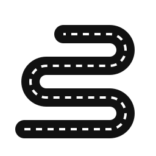
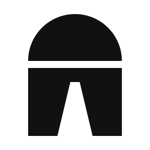
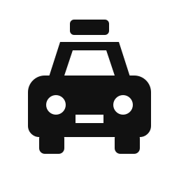

Logo concepts — Dhruv Fine Trip
Icon-based marks, built with the logo-design skill: black first, true sizes, then colour on the light theme. Pick A, B or C.
Hill road
A road climbing through hairpin bends, the way to Himachal and the Chardham. The hills are felt, not drawn.

Risk: even with three hairpins it can read as a snake or the letter S, and at 16px the bends merge.
Milestone
The Indian highway km-stone with its yellow cap, and a road running into it: every trip, measured and marked.

Risk: people outside India may not know the milestone, but this audience does.
Taxi front
A geometric taxi seen head-on with the yellow roof sign. The most direct option: it says "taxi" at a glance.

Risk: car icons are common among cab services. The roof sign, navy and yellow, and clean geometry are what set it apart.